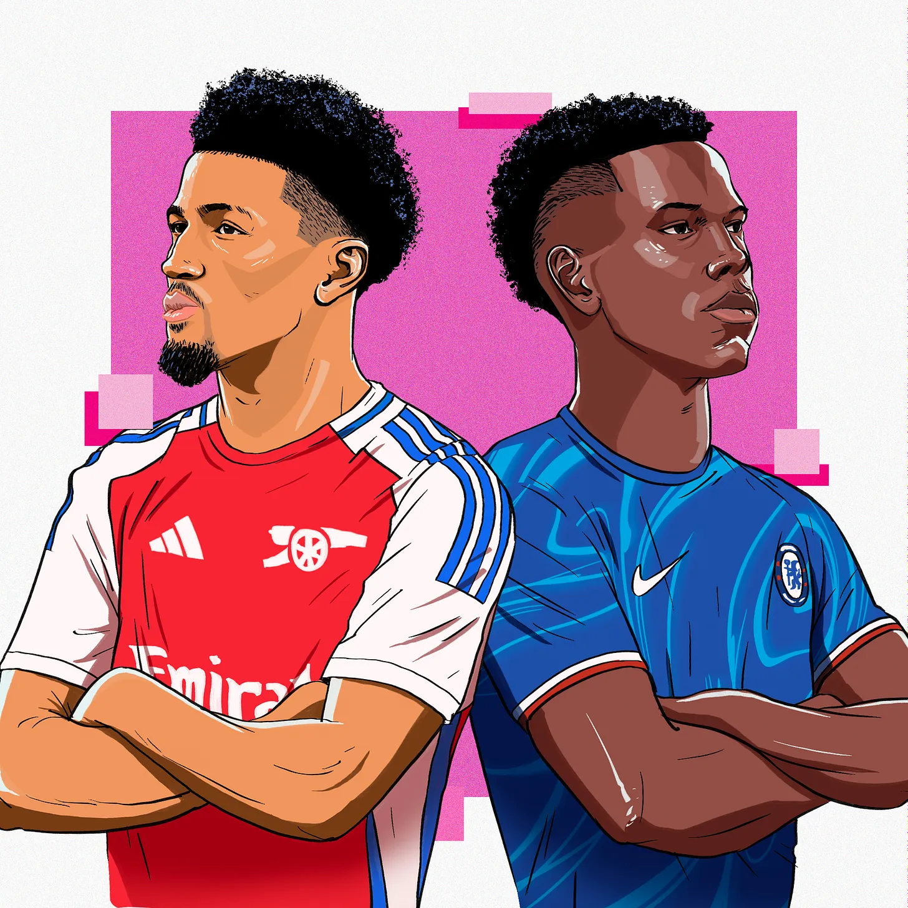
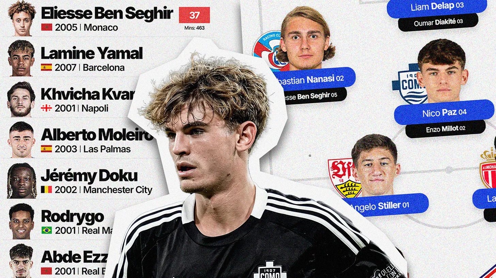
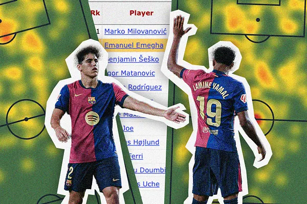
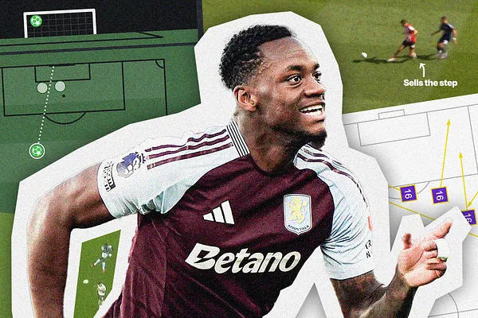

Cole Palmer's insane records, Bukayo Saka hits the Jackpot, and a story discovered with SCOUTED stats

SCOUTED50 2024/25: A definitive guide to the next generation
50 breakout talents to watch in the 2024/25 season.

The most fascinating U23 players in Europe's Big Five Leagues: from an Uzbek mind-reader to a Moroccan marvel
You know when Gary Neville and Jamie Carragher sit down and do their Team of the Season? This is that.

The new Power Forwards, Gvardiol’s secret weapon and Barça’s superhuman duo
Monday Night SCOUTED: And just like that, another international break begins.

Jhon Durán destroys xG, Amad does aMadness, and SCOUTED stats
Monday Night SCOUTED: dread it, run from it, Jake arrives all the same

Gavi is so back, record-chasing title challengers, and a left-footed Saliba regen
Ann Perkins is right.
The Shortlist: Riccardo Calafiori
A coveted, pressure-killing centre-back for your shortlists.
Mind Games
Why we get players wrong (and how to get them right)